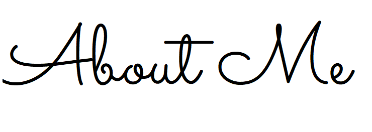
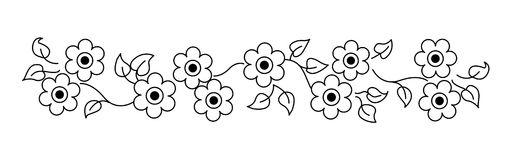

My name is Cynthia Aguilar, I am a senior undergraduate at UCI where I am studying Informatics with a specialization in Human-Computer Interaction, and Linguistics. My experiences at UCI have sparked my passion for User Experience Design and Front-end Development, which I hope to pursue after I graduate. In addition, I hope to apply what I have learned from linguistics to UX in an unique way.
View My Resume 